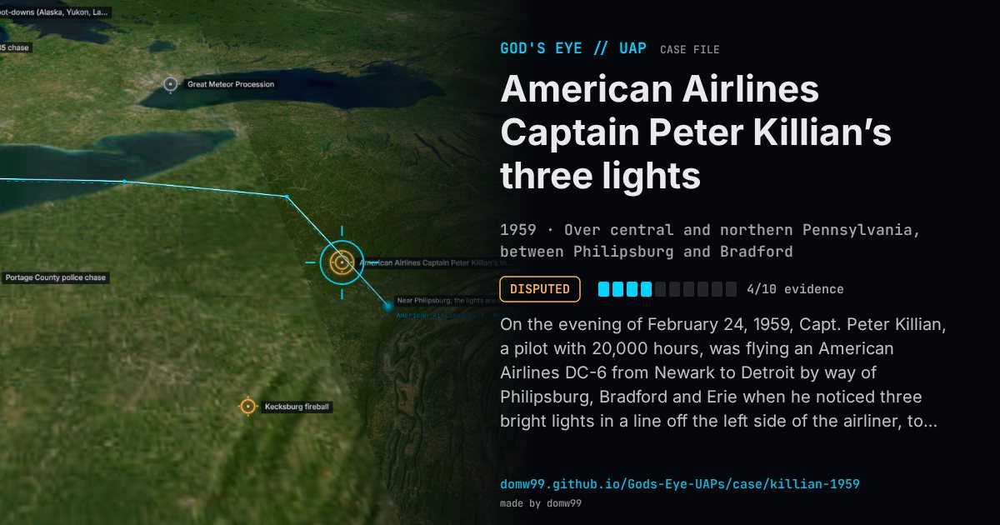

American Airlines Captain Peter Killian’s three lights

On the evening of February 24, 1959, Capt. Peter Killian, a pilot with 20,000 hours, was flying an American Airlines DC-6 from Newark to Detroit by way of Philipsburg, Bradford and Erie when he noticed three bright lights in a line off the left side of the airliner, to the south. At first he took them for the belt of Orion, then saw Orion as well. For about 45 minutes the lights stayed with the DC-6, changing colour and brightness, sometimes coming forward and sometimes falling back. Killian called two other American Airlines captains on the radio, who said they saw the lights too, and two United Airlines crews reported them in the same area; passengers and stewardesses watched. Killian filed a CIRVIS report and told the press the next day. The Air Force first mentioned Orion and then, in March, concluded that the crew had seen three B-47 bombers refuelling at night from a KC-97 tanker, a formation of lights that can last over an hour. Killian rejected it, and the case became a long-running argument between NICAP and the Air Force.
Explanation
The Air Force first mentioned the belt of Orion, then concluded that the crew had watched three B-47s refuelling at night from KC-97 tankers, which its records placed in the area flying east to west at about 17,000 ft and 210 knots. Critics, among them NICAP and later Brad Sparks, argued that the timing and geometry do not match and that a military transport saw the lights well to the south.
What was seen
Shape: Three bright lights in a line, changing from yellow to orange, sometimes in the spacing of Orion’s belt
Witnesses: Capt. Peter Killian and his crew, stewardesses and passengers; the crews of two other American Airlines and two United Airlines flights
Duration: About 40 to 45 minutes
Sources
- Project Blue Book file, Pennsylvania, February 1959 (Internet Archive)
- New York Times, February 26, 1959 (transcribed)
- The Killian case: accounts and the Air Force’s answers (transcribed)
Browse
- United States
- 1950s
- Disputed
- Aviation encounters
- Official government documents
- Many independent witnesses
- Pilot and aircrew witnesses
- Lights and fireballs
- Formations and rows of lights